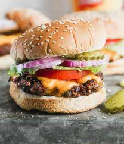

Hamburger

Description
Thick or thin, made on the grill or stovetop, this is the best and easiest all-purpose recipe for perfect hamburger patties every time! These juicy, delicious homemade hamburgers are ready in less than 30 minutes and are a must-make for your next cookout.
Ingredients
- Ground beef
- Bread Crumbs
- Worcestershire sauce
- Eggs
- Milk
- Spices
- Toppings of your choice
Step By Step
- In a large mixing bowl, add in the ground beef, bread crumbs, eggs, sauce, milk and spices
- Press the meat down into an even disk, then divide the patty mixture into 6
- Set out a baking sheet with wax paper to hold the patties and put them on top of it one at a time
- Press them down into your desired thickness
- Pre-heat the grill to medium heat, arouund 170°C - 200°C
- Grill for 3-4 minutes per side
- Slightly grill the bread for the burger
- Put your toppings and the patty in any way you like in the bun
- Serve hot.